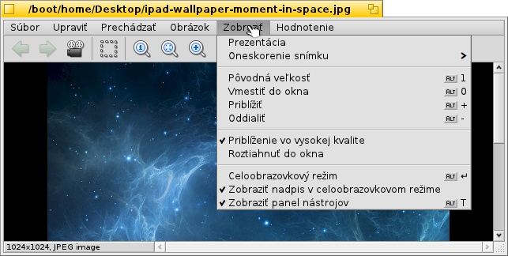

Slovenčina
Slovenčina Français
Français Deutsch
Deutsch Italiano
Italiano Русский
Русский Español
Español Svenska
Svenska 日本語
日本語 Українська
Українська 中文 ［中文］
中文 ［中文］ Português
Português Suomi
Suomi English
English Prehliadač obrázkov
Prehliadač obrázkov
| Panel: | Žiadna položka, zvyčajne sa spúšťa dvojitým kliknutím na podporovaný typ súboru. | |
| Umiestnenie: | /boot/system/apps/ShowImage | |
| Nastavenia: | ~/config/settings/ShowImage_settings |
Prehliadač obrázkov umožňuje prezeranie snímok vo všetkých formátoch, ktoré sú podporované Prekladačmi údajov. Nové formáty sú automaticky rozpoznané po pridaní ich prekladača do systému. To bolo vykonané pre súbory vektorových ikon Haiku, obrázky WonderBrush alebo napríklad, keď sa rozšírili obrázky WebP.
Prehliadač obrázkov poskytuje minimum funkcií úprav na orezanie, otočenie a prevrátenie obrázka a uloženie v inom formáte.
 Zobrazovanie
Zobrazovanie

Menu ponúka spustiť všetkých obrázkov v priečinku (alebo výsledkovom okne požiadavky) a nastaviť od 2 do 20 sekúnd.
Ďalšie príkazy aplikovateľné na aktuálne zobrazený obrázok (bez zmeny veľkosti okna):
zobraziť obrázok so zväčšením 100%.
zmenšuje obraz späť do okna, napr. po zväčšovaní alebo po zmene veľkosti okna.
a
pohyb do a von z obrazu po 10% krokoch. Zväčšovanie sa tiež vykonáva pomocou kolieska myši; pre natiahnutie obrázka väčšieho ako okno, jednoducho kliknite ľavým tlačidlom a ťahajte myšou okolo.
Dve nastavenia sa neaplikujú iba na zobrazený obrázok ale pamätajú sa pri prezeraní z obrázka na obrázok:
používa veľmi rýchly filter pri priblížení k zníženiu zubatých čiar a vytvorí hladší výsledok.
natiahne malé obrázky do rámu okna.
Potom je tu režím s možnosťou , ktorý dáva názov súboru na spodok obrázka.
Napokon, zobrazí/skryje grafické ovládanie:

Zľava doprava: Predošlý súbor, ďalší súbor, prezentácia (na celej obrazovke), režim výberu, pôvodná veľkosť, prispôsobiť veľkosti okna, priblížiť, oddialiť.
Väčšina z často používaných príkazov je tiež k dispozícii z menu pravého tlačidla myši na obrázku. Výhodné, keď ste v celoobrazovkovom režime.
Prehliadanie

Po otvorení obrázka môžte rýchlo prezerať všetky ostatné obrázky v jeho priečinku (alebo v okne výsledkov požiadavky) stláčaním ↑/↓ alebo ←/→. Môžte vydieť ako sa podľa toho mení výber v onke trackera.
Existuje rýchly spôsob, ako otvoriť zložku aktuálneho obrázka a dokonca prejsť na nadradený priečinok a podpriečinky. Funguje to rovnako ako u pohyb cez submenu v Trackeri kliknutím na info oblasť v stavovom riadku, ktorá ukazuje veľkosť a formát aktuálneho obrázka.
Pri pohľade na menu , ukazuje iný typ prechádzania: Niektoré obrazové formáty, ako je TIFF, môže obsahovať niekoľko stránok v jednom súbore. Príkazy ako a umožňujú prechádzať tieto stránky.
Úprava

Menu ponúka niekoľko úprav obrázka nevyhnutných pre prehliadač obrázkov: otáčanie a preklápanie obrázka. Avšak, skutočné údaje obrázka sa nezmenia. Iba sa pridá atribút súboru, takže bude zobrazený otočený alebo prevrátený pri ďalšom otvorení.
otvorí Pozadia pre nastavenie tohto obrázka ako obrázok pre vaše pracovné plochy.
Orezávanie je ďalšia funkcia, ktorá je niekedy potrebná. Na vybranie rámu, orezanie, môžte prepnúť z menu a vytiahnite pole ľavým tlačidlom. Ak si nechcete zmenu režimu najprv môžete vytvoriť toto pole v "normálnom režime" tým, že jednoducho držíte CTRL počas stlačenia ľavého tlačidla a ťahania, ktoré by inak len posúvalo obraz okolo.
alebo ESC odstráni vybrané pole.
Nasledujúca kapitola ukazuje, ako skutočne ušetriť orezané oblasti.
Ukladanie a konvertovanie
Ak chcete uložiť alebo previesť snímku do akéhokoľvek dostupného formátu, môžete použiť bežnú položku z menu , vyberte formát a vyberte názov súboru.
Často je rýchlejšie, obzvlášť keď je okno Trackera s cieľovým priečinkom už otvorené, použiť ťahať&pustiť.

Takto sa dokončí aj predchádzajúce orezávanie. Buď vyberte rám ako je opísané vyššie alebo vyberte pre celý obrázok. Potom ťahať a pustiť výber na Plochu alebo akékoľvek okno Trackera na vytvorenie nového obrázka rovnakého formátu ako pôvodný obrázok.
Ak chcete uložiť v inom formáte, ťahajte pravým tlačidlom myši a vyberte formát z kontextového menu pri položení obrázku.
Klávesové skratky
Tu je zoznam najpoužívanejších skratiek:
| ← / ↑ | Predchádzajúci obrázok | |
| → / ↓ | Ďalší obrázok | |
| DEL | Presunúť do Koša | |
| + | Priblížiť | |
| - | Vzdialiť | |
| 0 | Pôvodná veľkosť (100% mierky) | |
| 1 | Prispôsobiť oknu | |
| ALT ENTER | Prepnúť na celú obrazovku (tiež dvojitým kliknutím) | |
| CTRL | Pridržaním CTRL môžete vytvoriť výberový rámček bez toho, aby ste prepli do režimu výberu. |